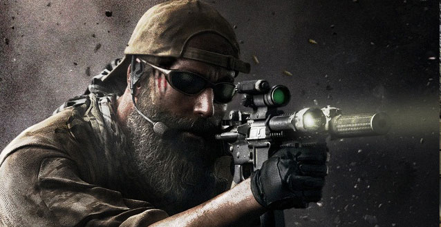
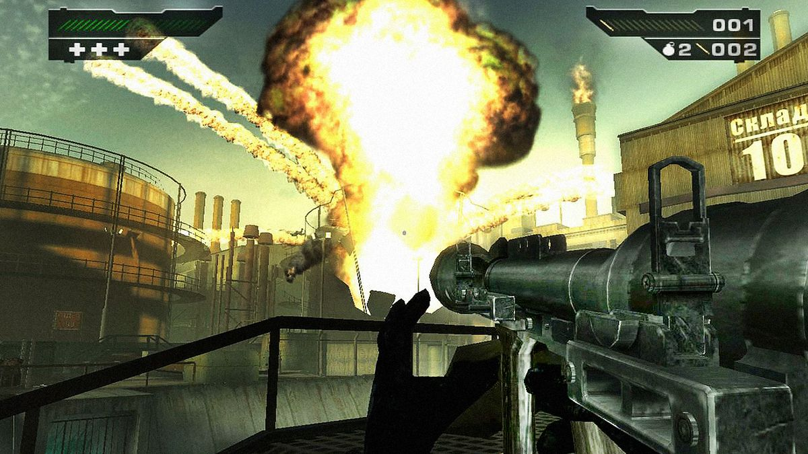
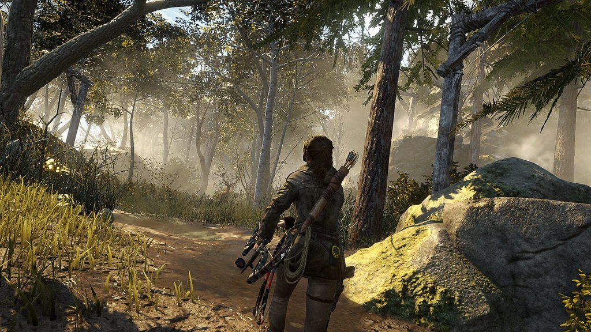
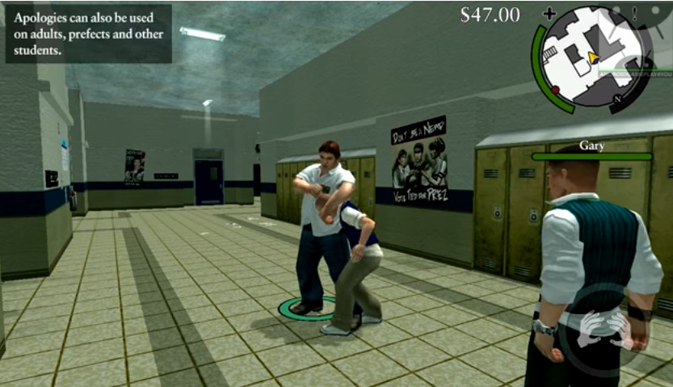

1GB GAMING
Website Overview
-
About
Copyright@2020 By 1GB Gaming
Game Store
FPS Games
|

|
Top 10 FPS Game All-TimeWhen done well, first-person shooters are an amalgam of greatness, especially for those gamers who enjoy a combination of valuable story elements and immense fun. They are actually the guilty pleasure of the gaming world. Without further ado, here are the Top 10 best FPS games of all-time. Click here for get more informatin. |
|||
|  |
The way of the GUN |
|||
|
Adventure Game |
 |
What is Adventure Game? |
 |
What is the Bully Game and how to play it. |
|
Action Game |